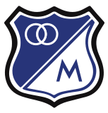
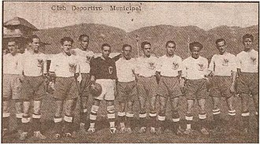

Millonarios8, es un club de fútbol de la ciudad de Bogotá, capital de Colombia. Es uno de los clubes más laureados y emblemáticos de Colombia; de allí que sea considerado uno de los clubes más grandes del país, y uno de los más importantes de Sudamérica.
 Millonarios HistoriaA principios de 1938 un grupo de estudiantes del Colegio Mayor de San Bartolomé ubicado en el Centro Histórico de Bogotá, decidieron formar un equipo de fútbol, con el objetivo de enfrentarse a los equipos de otros sectores de la ciudad. Los primeros partidos del equipo se jugaron en los terrenos de la finca "La Merced" del Colegio en ese entonces, donde hoy queda el Colegio San Bartolomé la Merced, y el barrio La Merced. Algunos jóvenes deseaban llamarlo Unión Juventud y otros querían el nombre de Unión Bogotana. Al poco tiempo el equipo, que no contaba con ningún apoyo oficial, comenzó a ganar apoyo popular y ya que no se habían podido decidir por ninguno de los dos nombres, jugaba un partido con uno de los dos nombres y al siguiente con el otro y posteriormente bajo el nombre de Juventud Bogotana, una unión de ambas denominaciones.14 Pasado un año de vida, el equipo rápidamente continua ganando el apoyo de la gente gracias a sus contundentes triunfos, por lo que en un sorprendente hecho, todos sus jugadores, dirigidos por su vocero Ignacio "Nacho" Izquierdo (primer hombre importante en la historia de la institución) son convocados para formar la primera Selección de fútbol de Colombia de la historia, que participó por primera vez en el mes de febrero en los Juegos Centroamericanos y del Caribe celebrados en Ciudad de Panamá, consiguiendo la Medalla de Bronce en un excelente debut.
Tras regresar de Panamá y con el equipo a punto de desaparecer, "Nacho" Izquierdo aprovecho que se avecinaba la primera edición de los Juegos Bolivarianos que se celebrarían en Bogotá y encontró en este grupo inicial el entusiasmo para conformar un cuadro más estructurado, por lo que el equipo volvió a representar a la Selección Colombia. Para dirigir a la Selección, el gobierno colombiano contrató, en Mar del Plata - Argentina a Fernando Paternoster, ex-jugador de la Selección Argentina, subcampeona de la Copa Mundial de Fútbol de 1930. Pero no solo eso, el equipo recibe el apoyo de la ciudad y es adquirido por la Municipalidad y el Concejo de Bogotá y recibe su auxilio económico. Fue entonces denominado Club Municipal de Deportes, convirtiéndose así en el equipo oficial de la ciudad de Bogotá y recibiendo el escudo (el actual) y los colores (en esa época, Blanco y Negro) oficiales de la ciudad. Al equipo se vinculan nuevos directivos, varios de ellos ligados a las autoridades de la ciudad, como Álvaro Rozo (Secretario de Gobierno de Bogotá), que asume como Presidente, Hernando Beltrán que es nombrado como Secretario, Antonio José Vargas y Manuel Briceño Pardo. Pese a los triunfos deportivos, el Municipio le suspendió la ayuda por los problemas surgidos entre los fundadores del Juventud Bogotana y Álvaro Rozo, presidente del Club Municipal; el cuadro entonces quedó a cargo de los directivos Manuel Briceño Pardo, Antonio José Vargas y del comerciante santandereano Alberto Lega, (quien ingresa aportando $50.000 para la contratación de cinco jugadores argentinos), quienes tomaron el mando del equipo y restablecieron a la normalidad la situación. Ya sin ayuda económica oficial y sin colores en su uniforme, los directivos le buscaron nuevo nombre al equipo: Municipal La Salle (cuando pasó a manos de los estudiantes del Instituto La Salle), Municipal Deportivo (cuando quedó a cargo de Briceño Pardo, Vargas y Lega) y posteriormente Municipal Deportivo Independiente, (este último nombre como aclaración de su desvinculación del Municipio), aunque en realidad para la prensa se jugaba simplemente como el equipo o seleccionado de Bogotá. El 28 de enero de 1939 (ya con el agregado de "Independiente" en el nombre para aclarar su desvinculación del Municipio), debutan los tres argentinos ante la Selección de Antioquia a la que vencen por (5:4) con goles de Lucífero en tres ocasiones, Carvajal y "Nacho" Izquierdo, en lo que fue todo un espectáculo para el fútbol de la ciudad pues era la primera vez que un equipo de Bogotá (y del país) formaba con jugadores extranjeros. Fue el año que jugó por última vez con el nombre de "Deportivo Independiente".  Millonarios Nacimiento del nombre de MillonariosDurante el citado año aparece el apodo de "Los Millonarios" debido a que Vicente Lucífero se reunía cada jueves con la junta directiva del equipo para negociar los pagos, ya que los argentinos no tenían un contrato anual, pero por esos días exigió un remuneración elevada, no solo para los argentinos, sino para todo el equipo, para que el salario de los jugadores colombianos se equiparara al mismo de los extranjeros, lo que provocó que Luis Camacho Montoya, director de las páginas deportivas del Diario El Tiempo comenzara fuertes críticas hacia el equipo por su desvinculación del Municipio y le dio a los dirigentes el trato de nuevos ricos, de Los Millonarios, porque pretendían mantener todo el equipo con todas sus contrataciones extranjeras, lo cual requería mucho dinero. Así Camacho Montoya afirmó: "Los argentinos son muy exigentes, van a cobrar tanto y tanto, este es un club de millonarios, los Municipalistas ahora son millonarios". De esta forma nació el apodo que se convertiría en su nombre definitivo, ya que la gente empezó a conocer y llamar al equipo más por el apodo "Los Millonarios", que por su nombre. Cabe resaltar que en el año 1932 (7 años atrás), el club argentino River Plate ya tenía ese apodo por hacer grandes contrataciones en esa época.14 El 13 de agosto de 1939, en reunión en el Café "El Gato Negro" (calle 16 con carrera octava) denominaron oficialmente el equipo como "Los Millonarios", como parte de un agregado en su nombre (tal como figura en las plaquetas de conmemoración de ese día), en una especie de relanzamiento y refundación del club, que tuvo lugar en esa fecha, cuando golearon por 6-0 al Deportivo Barranquilla, con goles de Luis Timón (1-0 "en franco offside", y 5-0), Martínez, Ruiz Díaz, Zapata y autogol de López.1516 En ese juego estrenaron uniforme totalmente azul y con medias grises, copiado del que usaba el equipo argentino Tigre, que venía de ser portada de la Revista El Gráfico y equipo del cual Fernando Paternoster era hincha.14 Este uniforme es el actual, solo con el cambio al juego siguiente sugerido por el dirigente Manuel Briceño Pardo, de cambiar la pantaloneta a color blanco y las medias a color azul (debido a su vinculación con el Partido Conservador Colombiano) y establecerlo definitivamente como su uniforme oficial, lo cual se afianzo aún más años después con los colores usados por Santa fe (referentes al Partido Liberal Colombiano). El primer equipo al que se le llamó Millonarios formaba con: Carlos Álvarez, Antenor Rodríguez (Capitán), Ignacio ‘‘Nacho’’ Izquierdo, Alfredo Cuezzo, Alfonso ‘‘Che’’ Piedrahita, Óscar Sabransky, Vicente Lucífero, Antonio Ruiz Díaz, Luis Timón, José Antonio ‘‘Mico’’ Zapata y Antonio Martínez. Desde su creación, Millonarios se convirtió en uno de los equipos más importantes de Colombia, al conseguir títulos en los torneos de liga aficionados y partidos internacionales que se disputaban, además de hacer varias giras por todo el país logrando importantes triunfos, y al convertirse en el gran favorito al título desde el momento en que surgió el primer campeonato de Fútbol Profesional Colombiano, en 1948.
>